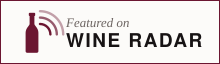

Wine Radar
A sua adega no Wine Radar
Todos os produtores da região têm uma página gratuita. Um perfil Plus acrescenta o que os visitantes mais pedem. Nunca o coloca mais acima nas nossas listas ou classificações.
Sempre gratuito
- Página própria com mapa, dados e indicações de caminho
- Classificações de guias e ligações para a imprensa
- Presença nas páginas de aldeias, zonas e castas
- Incluído no planeador de viagens
Plus
€149 por ano
- As suas próprias fotografias
- Horários e horas de prova
- Um botão “reservar uma prova”
- Eventos e festas das vindimas
- Uma ligação para a sua loja online
- Uma menção na nossa carta mensal
Grátis nos primeiros seis meses. Depois 149 € por ano, só se quiser continuar.
Como funciona
- Preencha um formulário curto com fotos, horários e ligações
- A sua página é atualizada no prazo de uma semana
- Após seis meses recebe uma ligação de pagamento – só paga se quiser manter o Plus
Algo errado na sua página? Diga-nos e corrigimos, sem custos. hello@wineradar.net
Badge

<a href="https://france.wineradar.net/france/bordeaux/winery/your-winery/"><img src="https://france.wineradar.net/assets/featured.svg" alt="Featured on Wine Radar" width="220" height="64"></a>